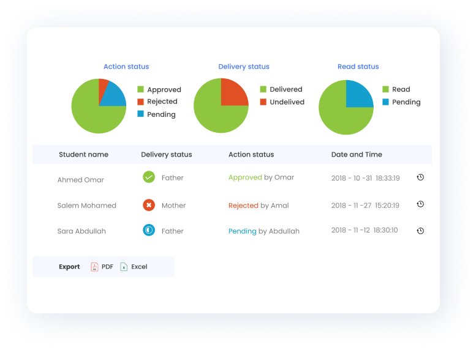

Top features to look out for in a
Student App
The market offers a wide range of student apps to help schools gauge and improve their communication and increase parent engagement.
However, it is important to look at the best student apps available to choose from the market, as each software is distinct in its features and capabilities. So here are a few key features you might want to consider before deciding on a student app for your school communication needs.
Comprehensive Dashboard
A dashboard is a space where all the communication activities reside. As the school communication apps are made to make communication activities more engaging and more accessible, such an application must have an intuitive and user-friendly dashboard so anyone using it can see what is happening. In addition, creating such a space makes it easier for students to engage with teachers, respond to their messages, and conduct their learning activities in one place.
Most modern student apps have a dashboard that provides all the necessary functionalities to manage the entire communication activities happening inside the school right from the dashboard. Usually, as the dashboard is where the school administrator monitors most activities, the parents can also be assured that every message in the applications is safe and secure when their children receive it.
Instant Communication
The main goal of a student app is to unify communication and make it easy for everyone to access all the school communication activities instantly. So any engagement, be it chats, school updates, or bulk messages, should reach their smart devices without delays. In addition, the ability to get school updates helps both the school and parents review school updates in one place, resulting in a significant rise in engagement rates and placing the school-parent communication in a better trajectory.
But different school communication software will account for various use cases even though they all serve a common purpose. So, it's a good idea to check if the student app you're interested in provides ease of communication no matter who you choose to communicate with.
Enable to analyze the profile
For a student, it's essential to have a look at the summary of their academic achievements. So a student app must provide a comprehensive picture of their performance in classroom activities. Along with students, parents must also have the option to check the profile and activities of students so they assist them when needed.

Oversee and monitor communication
As a student app is an extension of a full-fledged school communication software, many people like school staff, teachers, and parents interact, so the school administrators must provide a safe space for everyone to interact and share their ideas. So a student app must have provisions to enable the school management to oversee and monitor the entire school communication activities to ensure the children have a safe and secure space to interact and learn.
Easy classroom management
Classroom management can be challenging in this modern age where learning is a mix of in-person, online, and hybrid interactions. If teaching is not done with the right tools, the condition can be painful to manage, gradually affecting the student's academics. So a student app must be friendly for students, and it must complement the student's efforts to learn by making the class simpler, enjoyable, and engaging.
Most featured-rich student apps enable teachers to upload the class structure, a database of all the children, and easily share homework, class materials, and other documents to organize class easily. Moreover, the teacher can also ensure parents' engagement in classroom activities, resulting in children taking more interest in the class activities.